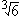

Solution to puzzle 103: Root sums
 Let a, b, c be rational numbers. Show that each of the following equations can be satisfied only if a = b = c = 0.
Let a, b, c be rational numbers. Show that each of the following equations can be satisfied only if a = b = c = 0.
- a + b + c
 = 0.
= 0. - a + b + c
 = 0.
= 0. - a + b + c = 0.
First of all, note that we may assume a, b, c are integers, for we can multiply each equation by the least common multiple of the denominators.
We will make use of the following lemma several times. We will proceed by reductio ad absurdum; assume that each equation can be satisfied for non-zero a, b, c, and derive a contradiction.
Lemma
Let n, m be positive integers. Then is either an integer or is irrational.
Proof
= t is an integer  m = tn; each prime in the prime factorization of m occurs a multiple of n times. This follows from the Fundamental Theorem of Arithmetic.
m = tn; each prime in the prime factorization of m occurs a multiple of n times. This follows from the Fundamental Theorem of Arithmetic.
Now suppose that is not an integer; that is = r/s (with s > 1.)
Then rn = msn.
In the prime factorizations of rn and sn, each prime occurs a multiple of n times.
However, in the prime factorization of m, at least one prime factor does not occur a multiple of n times.
This implies that the two sides of the equation have different prime factorizations, contradicting the Fundamental Theorem of Arithmetic. We conclude that cannot be represented as r/s.
i. a + b + c = 0
Firstly, we note that if b = c = 0, then a = 0.
If c = 0 and b  0, then = -a/b, contradicting the above lemma.
0, then = -a/b, contradicting the above lemma.
If c  0, we rewrite the equation as -b = a + c
0, we rewrite the equation as -b = a + c . Cubing both sides, we obtain
. Cubing both sides, we obtain
| -2b3 | = a3 + 3a2c |
| = a3 + 6ac2 + (3a2c + 2c3) |
Hence  = -(2b3 + a3 + 6ac2)/(3a2c + 2c3). Note that the denominator is necessarily non-zero.
= -(2b3 + a3 + 6ac2)/(3a2c + 2c3). Note that the denominator is necessarily non-zero.
Again, this contradicts the lemma.
Therefore the only solution is a = b = c = 0.
ii. a + b + c = 0
Note that if a = 0, then b = c = 0, for otherwise is rational, and so 2 × =  is rational, contradicting the above lemma.
is rational, contradicting the above lemma.
If b = 0, then a = c = 0, for otherwise  = -a/c is rational.
= -a/c is rational.
If c = 0, then a = b = 0, for otherwise = -a/b is rational.
Now suppose a, b, c are non-zero, and rewrite the equation as -a = b + c . Making use of the identity (x + y)3 = x3 + y3 + 3xy(x + y), and cubing both sides, we obtain
. Making use of the identity (x + y)3 = x3 + y3 + 3xy(x + y), and cubing both sides, we obtain
| -a3 | = 2b3 + 3c3 + 3bc(b + c |
| = 2b3 + 3c3 - 3abc |
Now = (a3 + 2b3 + 3c3)/3abc, contradicting the lemma.
Therefore the only solution is a = b = c = 0.
iii. a + b + c = 0
As above, we can conclude that if one of a, b, c equals zero, then all must equal zero. We now assume a, b, c are all non-zero.
Rewrite the equation as -a = b + c. Making use of the identity (x + y)3 = x3 + y3 + 3xy(x + y), and cubing both sides, we obtain
| -a3 | = 2b3 + 4c3 + 6bc(b + c) |
| = 2b3 + 4c3 - 6abc |
Hence a3 + 2b3 + 4c3 - 6abc = 0.(1)
We now assume that the greatest common divisor of a, b, c is 1. (If not, we can divide a, b, c by their greatest common divisor.)
From (1), a is even. Let a = 2a1.
Then 8a13 + 2b3 + 4c3 - 12a1bc = 0, from which 4a13 + b3 + 2c3 - 6a1bc = 0.
Hence b is even. Let b = 2b1.
Then 4a13 + 8b13 + 2c3 - 12a1b1c = 0, from which 2a13 + 4b13 + c3 - 6a1b1c = 0.
We now conclude that c is even, so that a, b, c are all even. This is a contradiction, as we assumed that the greatest common divisor of a, b, c is 1.
Therefore the only solution is a = b = c = 0.
Sum of two squares 
Show that a2 + b2 = 3c2 has no solution in positive integers.
Hint - Solution
Quadratic roots 
Find a necessary and sufficient condition for one of the roots of x2 + ax + b = 0 to be the square of the other root.
Hint - Answer - Solution
Further reading
Source: Traditional